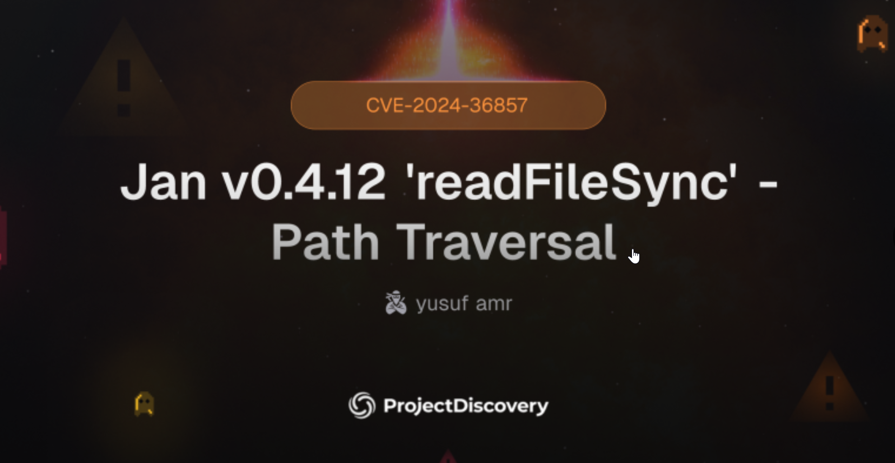

Background Earlier in 2024, a security flaw was discovered in Jan AI, a rapidly growing AI platform and ChatGPT alternative. The vulnerability, tracked as CVE-2024-36857, is a Path Traversal vulnerability allowing attackers to read arbitrary files from the server filesystem. This occurred due to a misconfigured API endpoint that failed to sanitize user-controlled input passed to the backend file handler. My Contribution I created and contributed an official Nuclei detection template for CVE-2024-36857 as part of the ProjectDiscovery open-source community. The template enables security researchers and organizations to detect vulnerable Jan AI instances instantly by sending controlled traversal payloads such as../../../../etc/passwd and analyzing the server response.
This contribution was reviewed and published by the ProjectDiscovery team.
Proud to see this detection listed on the official ProjectDiscovery Cloud library for CVE-2024-36857!
You can check it out here:
- Official ProjectDiscovery Listing: https://cloud.projectdiscovery.io/library/CVE-2024-36857
- Critical Exposure: Arbitrary file read can leak sensitive system files, environment variables, credentials, or configuration secrets.
- Real-World Attack Relevance: API-based path traversal is one of the most exploited vulnerabilities.
- Fast Security Validation: Organizations can easily verify exposure using Nuclei.
- Open-Source Defense: Contributions like this strengthen the global security community.
- Reducing False Positives: Ensured detection logic was precise and based on actual leaked system file markers.
- Safe Testing: Payloads were designed to be non-destructive and read only harmless files.
- MITRE CVE: MITRE Entry
- Nuclei Template: ProjectDiscovery Cloud Listing